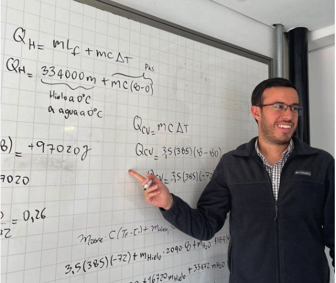

Volunteering and social engagement.
For me, volunteering is truly significant. It allows me to give back to my community, fostering a sense of connection and empathy. Through volunteering, I can develop new skills, grow personally, and make a positive impact on the lives of others. It's not just about helping those in need, but also about finding purpose and building relationships. Engaging in volunteer work brings a deep sense of fulfillment, knowing that I'm making a real difference while also growing as an individual.
Reforestation Initiative: Encenillo Biological Reserve
I jumped into a reforestation project to bring life back to areas that took a hit from mining in the Encenillo Biological Reserve. I got hands-on planting eucalyptus trees, doing my part to balance out the environmental impact.

Teaming up with around 30 awesome folks, we rocked the mission and got over 50 trees in the ground through a bunch of fun planting sessions.
Part-Time Collaborator, A-prender
During the final stages of my undergraduate thesis, I participated in a part-time collaboration with A-prender, an organization dedicated to supporting school children who face learning obstacles and academic challenges.

I played an integral role in teaching high school subjects, contributing to the enhancement of students' academic abilities and fostering a positive learning environment.